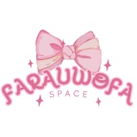

halokamifarauwofa

Farauwofa Space adalah gabungan identitas dari setiap anggota.
Fa → (FArennisa)
Ra → (RAchel)
Uw → (WUlan)
O → (Octa)
Fa → (asiyyFA)
“Farauwofa Space” adalah simbol persatuan dari berbagai karakter dan kepribadian yang berbeda, namun
saling melengkapi dalam satu ruang kreatif yang penuh ide untuk berkembang bersama.